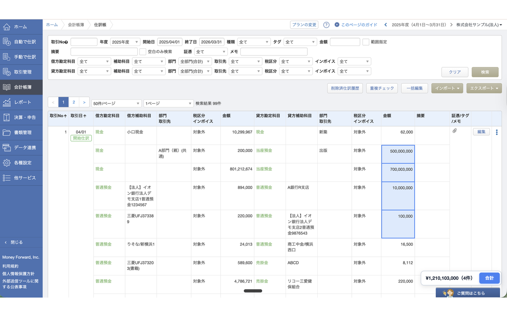
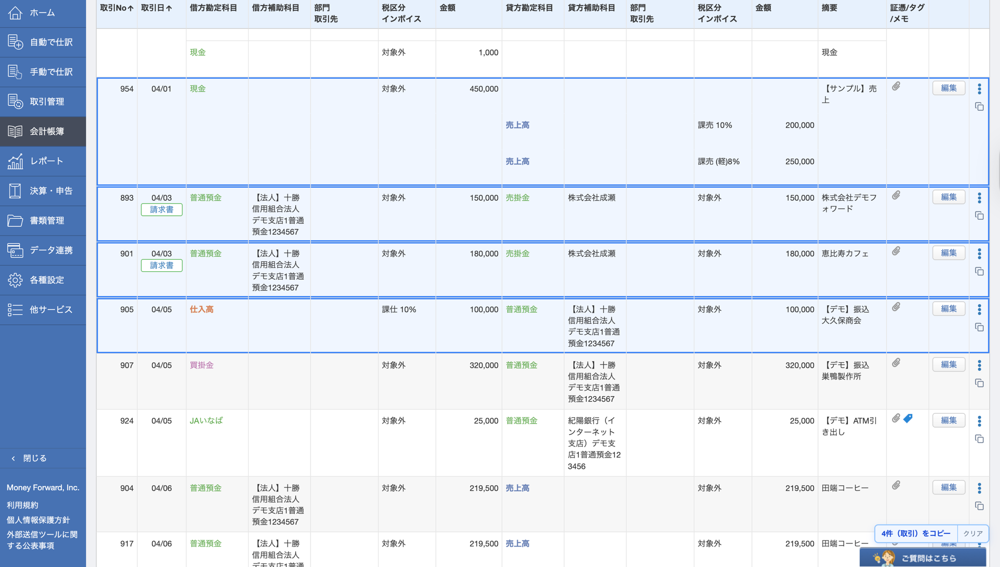
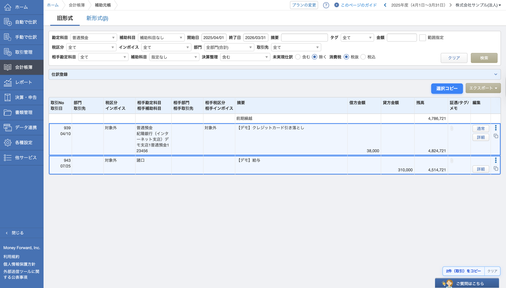

できること
「期首」「先月末」など6種のショートカットボタンをワンクリックで日付欄に反映。ホバーで挿入日付（MM/DD 形式）を確認できます
手取り額から受取利息と源泉税を逆算して仕訳フィールドへ自動入力
連携サービスから入力の摘要をワンクリックで仕訳帳検索・Google 検索
右下の「合計/差分」ボタンでモードON、金額をクリック/ドラッグ選択して合計・差分をリアルタイム表示、ダブルクリックでコピー
仕訳一覧・仕訳帳・元帳など5画面に対応。1行コピーと仕訳のテキスト化（2行コピー・1行コピーの2形式）で相手勘定つき整形コピーを提供
試算表でCmd（Mac）/Ctrl（Win/Linux）+左ドラッグするだけで、範囲内の科目リンクをまとめて新しいタブで開きます。通常の操作には一切影響しません
インストール後の設定
ツールバーの MFCA Labs アイコンをクリックするとポップアップが開きます。「日付ショートカット」「受取利息の自動計算」「摘要の検索ボタン」「金額の合計・コピー」「仕訳のコピー」「科目リンクの一括オープン」をチェックボックスで個別にオン/オフできます。設定は端末内に保存され、開いているタブに即時反映されます。

ポップアップで各機能を個別に有効/無効にできます
日付ショートカット
日付入力欄（jQuery UI カレンダー）の付近に「期首」「先々月初」「先々月末」「先月初」「先月末」「今月末」の 6 つのショートカットボタンが表示されます。ボタンをクリックするだけで、フォーカス中の日付欄に日付が直接反映されます。各ボタンにホバーすると、挿入される日付が MM/DD 形式（例: 04/01）でツールチップに表示されます。

日付入力欄の近くにショートカットボタンが表示されます
受取利息の自動計算
「利息計算」ボタンが表示されます。借方の入金額（手取り額）を入力してボタンをクリックすると、受取利息の総額と源泉所得税額を自動計算して各フィールドへ反映します。
計算式
手取り率: 1 − 15.315% = 0.84685
受取利息（総額）: 入金額 ÷ 0.84685（切り捨て）
源泉所得税額: 受取利息総額 − 入金額

「利息計算」ボタンが表示されます
摘要の検索ボタン
連携サービスから入力の各行の摘要セル付近に「仕訳帳で検索」と「Google 検索」ボタンが表示されます。「仕訳帳で検索」は摘要テキストで絞り込み検索します。「Google 検索」は同じテキストで Google 検索を開きます。

各行の摘要セル付近に「仕訳帳」「Google」ボタンが表示されます
金額の合計・コピー
仕訳帳・総勘定元帳・補助元帳の画面右下に「合計/差分」ボタンが常駐します。通常時はクラウド会計本来の操作感を維持し、ボタンをクリックした時のみ金額選択モードがONになります。モード中に金額セルをクリック/ドラッグすると選択中の合計金額と件数がリアルタイムで表示され、合計の数値をダブルクリックするとクリップボードへコピーされます。Esc を1回押すと選択クリア、選択なし状態で Esc を押すとモード終了です。
バッジ内のセグメントコントロール（[合計|差分]）をクリックすると合計⇄差分を切替できます。差分表示では借方基準の符号付き差額（例: 差 +¥600（5件））を表示し、ダブルクリックで差額の絶対値をコピーします。起点セルをクリック後、Shift+クリックで同列の起点〜終点間を一括選択できます。Ctrl（Mac は Cmd）+クリックで既存の選択を保持したまま個別セルをトグル追加/除外することもできます（Shift+クリックと併存）。

右下の「合計/差分」ボタンでモードON → 金額をクリック/ドラッグ選択 → 合計または差分をダブルクリックでクリップボードへコピー
仕訳のコピー
全5画面に対応した仕訳コピー機能です。デフォルトでは MF クラウド会計本来の操作感をそのまま維持し、明示的なトリガー（コピーアイコン・仕訳のテキスト化トグル）を操作したときのみ有効になります。
1行コピー: 各行の⋮（メニュー）付近に表示されるコピーアイコンをクリックすると、その行の仕訳内容をクリップボードへコピーします。コピー後はアイコンが「✓」に変わり、2秒後に自動復帰します。
仕訳のテキスト化（複数行一括）: 上部の「仕訳のテキスト化」トグルをONにするとモードが起動します。行をクリックして選択（Shift+クリックで範囲選択も可能）し、右下バッジの2つのボタンで形式を選択してコピーします。複合仕訳グループもグループ単位で正しく処理されます。Esc を押すと選択クリア、選択なし状態でもう一度 Esc を押すとモードを終了します。
「N件を2行コピー」は相手勘定でグルーピングし各明細を列挙する形式（例: ▼現金 → 明細1・明細2）。「N件を1行コピー」はグルーピングなし・単体コピーと同じ1行フォーマットを改行で並べる形式です。
コピーフォーマット（相手勘定つき整形）: 元帳系は YYYY/MM/DD 相手勘定 摘要 金額 出金/入金、仕訳帳・振替伝票は YYYY/MM/DD 借方科目／貸方科目 摘要 金額、仕訳一覧は YYYY/MM/DD 金融機関 摘要 金額 出金/入金 の形式で出力されます（金額は円単位付き）。
仕訳Noをコピーに含める（オプション）: ポップアップの「仕訳Noをコピーに含める」チェックボックスをONにすると、コピー出力の日付の直後に仕訳番号が 仕訳No4942 の形式で挿入されます。仕訳帳・総勘定元帳・補助元帳・振替伝票の4画面に対応しています（仕訳一覧は対象外）。デフォルトはOFFです。

仕訳帳で複数行を選択し「N件を2行コピー」または「N件を1行コピー」で一括整形コピー。行をクリック（Shift+クリックで範囲選択）して右下バッジを押すだけです

補助元帳でも同様に仕訳のテキスト化が可能（相手勘定つき整形）。仕訳一覧・仕訳帳・総勘定元帳・補助元帳・振替伝票の全5画面に対応しています
科目リンクの一括オープン（ドラッグ選択）
試算表の科目リンク（<a href>）を複数まとめて新しいタブで開ける機能です。Cmd（Mac）または Ctrl（Win/Linux）を押しながら左ドラッグすると、ドラッグ中は半透明の青系矩形オーバーレイが表示され、範囲内に入ったリンクがリアルタイムでハイライトされます。矩形の右下には選択件数バッジ（「N 件」）が表示されます。ドラッグを完了してボタンを離した瞬間に、選択されたすべてのリンクがまとめて新しいタブで開きます（ドラッグ中に順次開くのではなく、リリース時に一括オープン）。
10 件を超えるリンクが範囲に含まれる場合は、件数を伝える確認ダイアログを表示してから一括オープンします。修飾キー（Cmd/Ctrl）なしの通常クリック・テキスト選択・通常ドラッグには一切影響せず、MF クラウド会計本来の操作感を維持します。ポップアップの「科目リンクの一括オープン（ドラッグ選択）」チェックボックスで ON/OFF を切り替えられます（デフォルト: ON）。

Cmd/Ctrl+左ドラッグで範囲を指定すると科目リンクがハイライト。ドラッグ完了時にまとめて新しいタブで開きます
本ツールに関する重要事項のご案内
1. 本ツールの位置づけについて
本ツールは株式会社キャシュモが開発したもので、マネーフォワード（MF）社の公式サービスではありません。将来的にMF本体への機能統合を検討する可能性はありますが、現時点では外部ツールとしての提供となります。
2. リリースにあたっての確認状況
本リリースの際、MF社のCISO室による技術的な確認を受けているほか、MF社の法務部門からも一定の条件（免責事項等）のもとで、外部への公表について了解を得ております。ただし、MF本体の仕様変更に追従できず、予告なく機能が利用できなくなる可能性がある点はあらかじめご了承ください。
3. セキュリティ・サポート面
-
セキュリティ:
各機能の処理はすべて利用者のPC内で完結します。仕訳の日付・摘要・勘定科目・金額・取引先といった帳簿の内容や、事業者名・閲覧中のURLが外部へ送信されることは一切ありません。
なお v1.8.0 以降は、本ツールを継続・改善するための判断材料として「機能ごとの1日あたりの利用回数」だけを匿名で送信する仕組みを設けています。これは初回に表示される確認画面で「協力する」を選んだ場合に限り動作し、選ばなければ何も送信されず、識別子も生成されません。後からいつでも停止でき、送信済みデータの削除も請求できます。詳しくは送信される利用データについてとプライバシーポリシーをご覧ください。 - サポート: 操作方法のレクチャーや不具合対応のサポート窓口は設けておりません。もしお気づきの点があれば、MF社の担当者を通じてフィードバックをいただけますと幸いです。
4. 今後の仕様変更・提供停止の可能性
利便性の向上を優先するため、今後も随時仕様変更を行ってまいります。その際、過去バージョンとの互換性を維持しない変更や、予告なく提供を停止する可能性もございます。継続的な動作を保証するものではない点をご理解の上、ご活用いただければと思います。